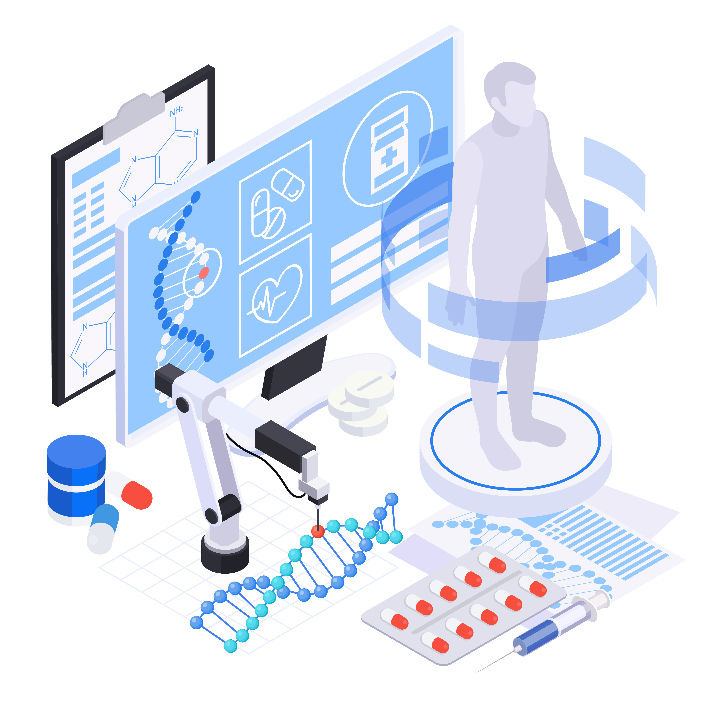

UNISCAN AI - Unified Diagnostic Report Generator
Advanced AI-powered unified diagnostic report generator from multi-modal medical images. Generate comprehensive diagnostic reports from CT scans, MRI, X-Ray, and other medical imaging modalities using state-of-the-art deep learning models.

UNISCAN AI Framework Features
Advanced AI-powered unified diagnostic report generation from multi-modal medical images.
Multi-Modal Image Processing
Integrates advanced AI models to process CT scans, MRI, X-Ray, and other medical imaging modalities for unified diagnostic reports.
View ArchitecturesCT & MRI Analysis
Advanced AI models analyze CT scans and MRI images to detect abnormalities and generate comprehensive diagnostic insights.
Upload X-RayMulti-Modal Fusion
Fuse information from multiple imaging modalities using advanced AI networks for comprehensive diagnostic analysis.
Upload CT ScanClinical Validation
Models validated against expert radiologist annotations ensuring clinical-grade diagnostic accuracy.
View ValidationUnified Diagnostic Reports
Generate comprehensive unified diagnostic reports with confidence scores, detected anomalies, and multi-modal analysis for clinical review.
View ReportsPerformance Analytics
Track model performance metrics including accuracy, sensitivity, specificity, and F1 scores across architectures.
See AnalyticsReady to generate unified diagnostic reports?
Start using UNISCAN AI to analyze multi-modal medical images and generate comprehensive diagnostic reports with clinical-grade precision.
Generate ReportCore capabilities for
unified diagnostic report generation

From multi-modal medical images to unified diagnostic reports
Upload CT scans, MRI, X-Ray, or other medical images and receive instant, comprehensive unified diagnostic reports with detailed analysis and confidence scores.
Generate Report NowLatest Research & Insights

AI-Powered Multi-Modal Medical Imaging
Exploring how advanced AI models improve unified diagnostic report generation accuracy from CT scans, MRI, X-Ray, and other medical imaging modalities.
Read More
Multi-Modal Framework Benefits
Comparing advanced AI architectures for comprehensive unified diagnostic report generation from multiple medical imaging modalities.
Read More
Clinical Validation of AI Models
Rigorous validation processes ensuring UNISCAN AI models meet clinical standards for unified diagnostic report generation from multi-modal medical images.
Read More
Multi-Modal Medical Image Analysis
Understanding the advantages of unified multi-modal imaging support for comprehensive diagnostic report generation.
Read More